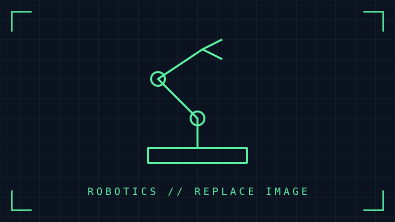

Project archive · 05 entries
Projects
Each project has its own page with the full story — goals, process, results and media.

EO-01 · 2026 Flagship
EO-01 Quadruped Robot Dog
Sci-fi inspired, fully 3D-printed robot dog platform — walks, jumps and emotes through a display head. 14 servos, ESP32, built for makers.
Open file →
PRJ-001 · 2025
Autonomous Rover
Outdoor rover with SLAM navigation, a custom sensor mast and a web-based teleop dashboard.
Open file →
PRJ-002 · 2024
6-DOF Robotic Arm
3D-printed manipulator with inverse kinematics and camera-based pick-and-place.
Open file →
PRJ-003 · 2025
Orbital Station Environment
Real-time sci-fi interior: modular kit, PBR texturing and lighting in Unreal Engine.
Open file →
PRJ-004 · 2023
Hard-Surface Mech
Game-ready hard-surface mech with a full rig and turntable renders.
Open file →